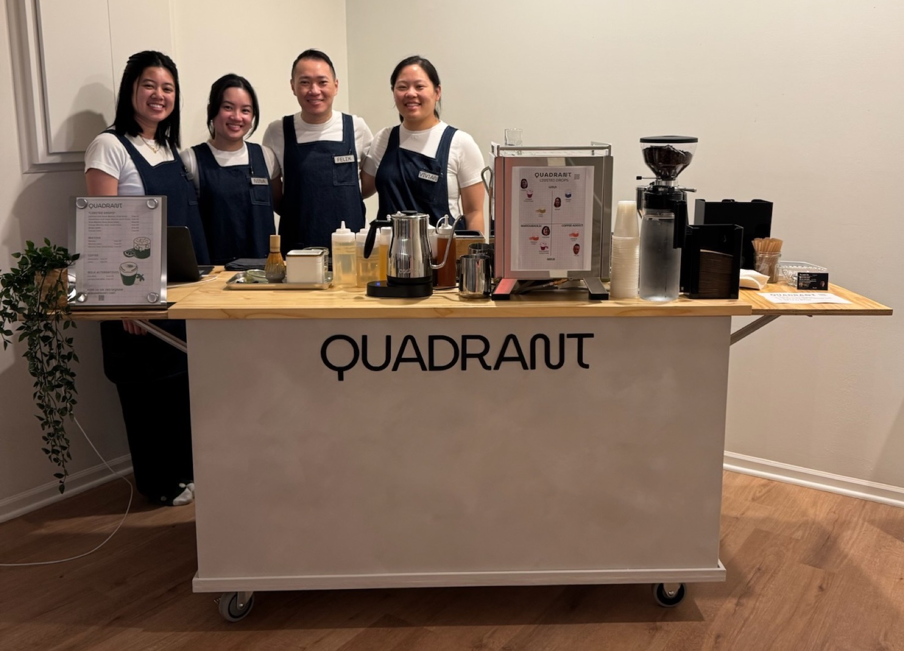
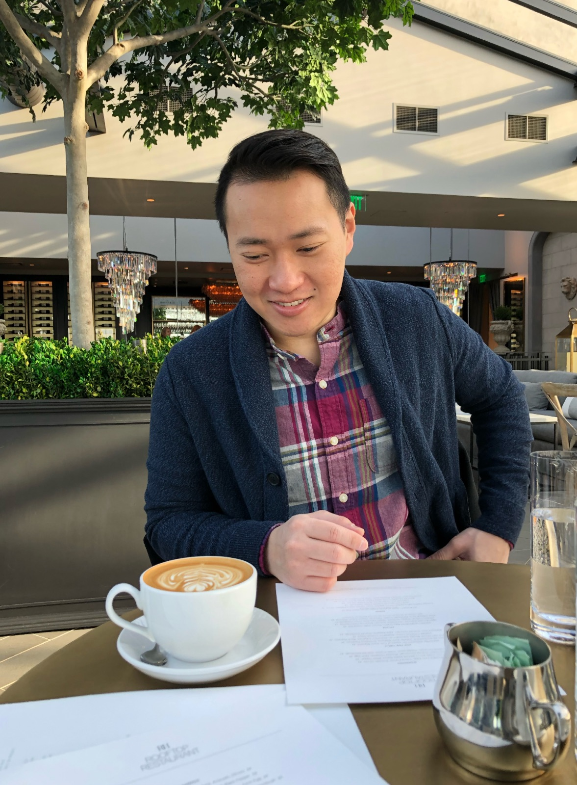
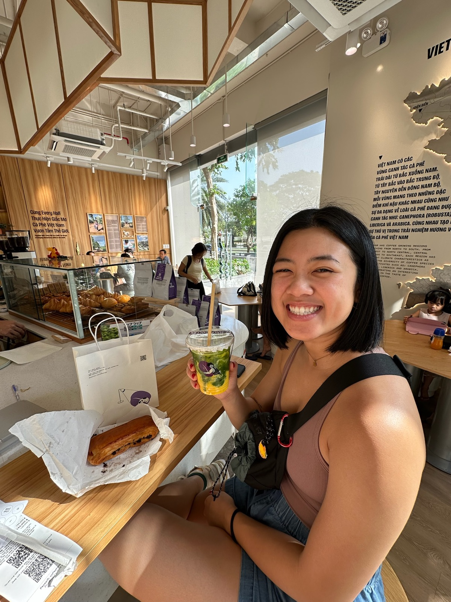
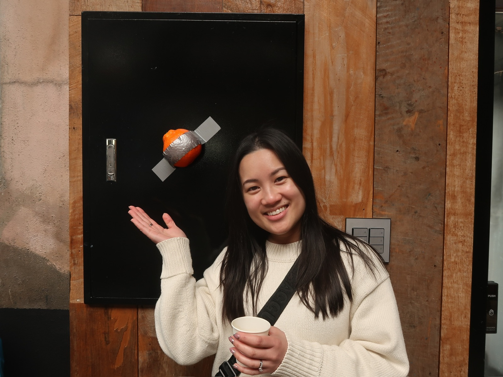
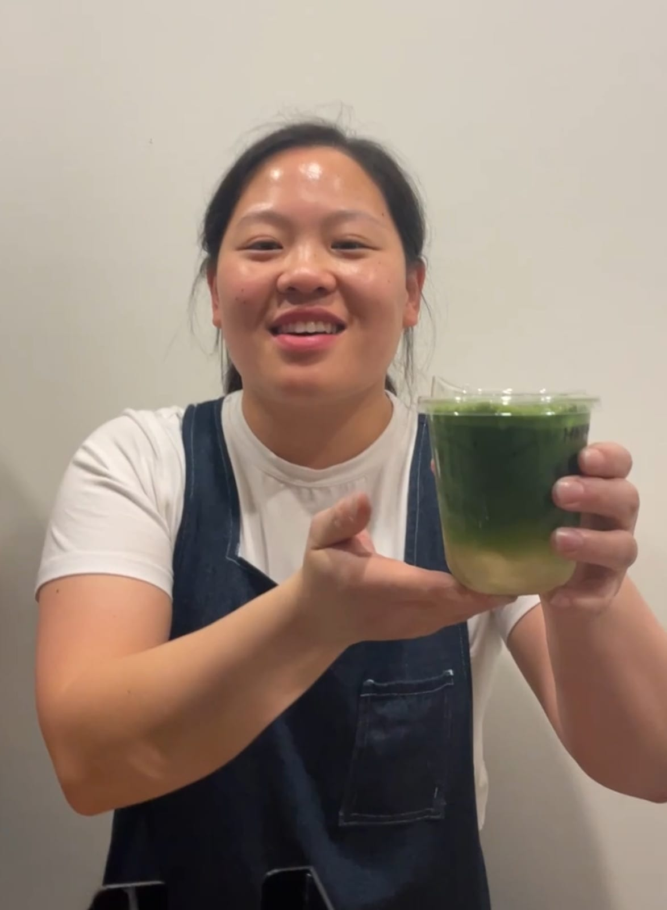

Our Story
Founded in the Twin Cities by four self-proclaimed coffee and matcha enthusiasts, Quadrant Cart was brewed up from a shared passion for flavor, culture, and creativity. As a team of three food scientists and one food engineer, we blend science with artistry to craft thoughtfully balanced drinks. From traveling the world tasting coffee, matcha, and unique local ingredients, we’ve gathered inspiration from every sip along the way. We hope to bring those experiences back home to create something special for our community.

Felix L.
A lifelong coffee lover who enjoys trying new coffee shops and appreciating the overall coffee-drinking experience. I'm passionate about creating simple, high-quality drinks that make people's day a little better. Being part of this coffee cart lets me share that passion with every cup we serve.

Heidi L.
With a background in food engineering and project management, I've always been passionate about bringing ideas to life through creativity, structure, and innovation. My love for matcha and unique flavor experiences inspired me to start this coffee cart and help craft drinks that feel both familiar and unexpected. I'm especially excited by the process of blending science and asian culture into every cup.

Nina L.
Food Scientist with a passion for crafting innovative beverage experiences. A matcha-holic and coffee addict, always exploring new flavor combinations and experimenting with trendy drinks that blend science, creativity, and taste into every sip.

Vivian H.
As someone who thrives in fast-paced, hands-on environments, I found the coffee cart to be the perfect outlet. I enjoy the rhythm of busy mornings and the small conversations that come with every order. For me, this is more than coffee—it's about building daily connections in the community.